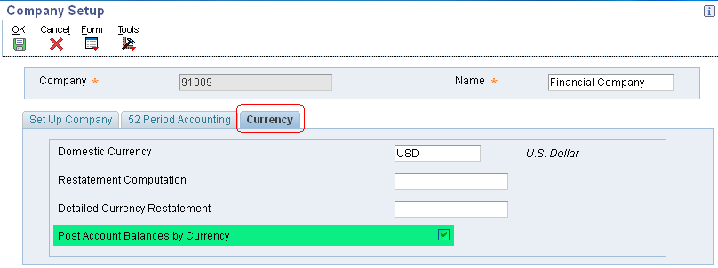

| Purpose |
| Scope |
| Details |
| Overview |
| Setup |
| Activate Post Balances by Currency |
| PBCxx AAIs |
| Balances by Currency Versus Summarized Balances |
| Currency Fields F0911/F0902 Tables |
| Changing from Summarized Balances to Balances by Currency |
| Frequently Asked Questions |
This document provides an overview of multicurrency Post Balances by Currency versus Summarized Balances functionality and discusses how the system updates currency fields in the Account Balances (F0902) table.
This document is intended for Finance Functional users who will be involved in the multicurrency processing in the General Accounting system
Post Balances by Currency (PBC) allows Account Balances (F0902) transactions to separate transaction amounts for the transaction currency in both the CA (foreign currency) and AA (actual amounts) ledgers. This will give additional meaning to the AA (domestic transactions) and CA (foreign transactions) ledgers. Depending on business needs, this setup could be critical to have meaningful data for these ledger types.
The Post Balances by Currency (PBC) feature will update the Currency Code - From (CRCD) field in the records of the Account Balances (F0902) table and balances will be stored by currency. This allows viewing online inquiries and reporting by a specific currency. This can be set up for the entire Chart of Accounts or only certain specific accounts.
To post account balances by currency:
You activate the Post Balances by Currency feature in Company Setup program (P0010) under the Currency tab.

Select the Post Account Balances by Currency check box for each company in which you want to post balances by currency in the Account Balances table (F0902).
If unchecked, it implies that the Summarized Balances method is applicable during posting of multi-currency transactions. Summarized Balances is also referred to as the Simple Method occasionally.
The Confirmation - AAI Setup form appears if you have not set up the required account ranges for AAI item PBCxx for the company or for default company 00000. If this form appears, click Yes to display the Set Up Multiple AAI Items form and add the ranges for PBCxx. Then click OK to return to the Company Setup form.
If you click No and do not set up the required AAI item ranges, be aware that the general ledger post program posts journal entries for the company as summarized balances with mixed currencies instead of detailed balances by currency. The post program sends a warning to the work center that the balances were not posted by currency because AAI item PBC was not found.
You can choose to set up AAI items PBCxx later to specify the beginning and ending account ranges to track and post balances by currency in the Account Balances table (F0902).
Following rules apply to AAI item PBCxx:
Example: PBCxx Setup
Company 00070 posts balances by currency for all accounts. The retained earnings object account is 4980. To exclude account 4980, set up four AAI items for PBCxx and two ranges as shown in this table:
| AAI Item | Description |
Business Unit (Not Used) |
Object (Required) |
Subsidiary (Optional) |
|---|---|---|---|---|
| PBC01 | Post Balances by Currency - Beginning Account Range 1 | NA | 1000 | Blank |
| PBC02 | Post Balances by Currency - Ending Account Range 1 | NA | 4979 | 99999999 |
| PBC03 | Post Balances by Currency - Beginning Account Range 2 |
NA | 4981 | Blank |
| PBC04 | Post Balances by Currency - Ending Account Range 2 | NA | 9999 | 99999999 |
Similarly you can define up to 49 ranges for Post Balances by Currency.
The ability to review balance amounts in different currencies depends on whether you post amounts in the F0902 table by currency. If you post balances by currency, you can review account balance amounts by currency in the F0902 table instead of reviewing summarized totals, which are meaningless because of the different currencies.
For each company, you choose whether to select the Post Balances by Currency check box under the Currency tab in the Company Setup program (P0010). If you do not select this check box, the system summarizes all currency amounts in one total amount. The total amount is a hash total and is meaningless because of the different currencies.
The differences between posting balances by currency and not posting them by currency (summarized balances) are described in this table:
| Post Balances by Currency | Summarized Balances |
|---|---|
|
Separates transaction amounts for the transaction currency in both the CA (foreign currency) and AA (actual amounts) ledgers. To review balances according to the currency in which transactions occurred, set up the system to post balances by currency. |
Does not separate transaction amounts by currency in the CA ledger in Account Balances (F0902) table. If you do not post balances by currency, the CA ledger contains numerous currencies (possibly with different decimal places), making the totals for CA ledger meaningless. |
|
The advantage of this method is that it keeps track of the amounts by currency. For example, posting balances by currency enables you to review amounts that are posted to sales accounts in Canadian dollars, U.S. dollars, and British pounds and, by extension, to review the amounts sold in each country without using subsidiary accounts. |
You cannot keep track of the amounts by currency while posting summarized balances. |
|
The disadvantage of this method is that it increases the number of records in the F0902 table, using more disk space. |
The advantage of this method is that posting summarized balances creates fewer records in the F0902 table than posting balances by currency, and therefore requires less disk space. The system uses the transaction detail to calculate currency totals for most reports. |
When you post transactions in a multicurrency environment, the system updates two currency fields in the Account Balances table (F0902) for reporting purposes:
Depending on whether you have the check box selected to post account balances by currency, the system updates the CRCD and CRCX fields with different values. This table shows which fields the system updates based on the whether the check box is selected:
| Post Account Balances by Currency Check Box | Ledger Type |
Transaction Currency (CRCD) |
Base Currency (CRCX) |
|---|---|---|---|
| Selected | AA | Transaction Currency | Currency assigned to the company. |
| Selected | CA | Transaction Currency | Transaction currency. |
| Cleared | AA | Blank | Currency assigned to the company. |
| Cleared | CA | Blank | Currency assigned to the company. |
| Cleared | All other ledger types | Blank | Currency of ledger type, if specified; otherwise, currency assigned to the company. |
NOTE:
In case of Post Balances by Currency Flag checked, both CRCD and CRCX fields will always have currency values populated for both AA and CA Ledger Types in F0902 table. In case of F0902 record having blank value of CRCD/CRCX fields for AA/CA Ledger type will imply erroneous F0902 records. Run Foreign Currency Account Balances Integrity Report (R09707) to review and correct integrity discrepancies. For more information, refer to Overview of Foreign Currency Account Balances Integrity Report (R09707) .
Example: A US Company with transactions in US Dollars (USD), Pound Sterling (GBP), Euro (EUR) and Canadian Dollars (CAD).
| Table | CRCD | CRCX |
|---|---|---|
| Company Constants (F0010) | USD | NA |
| Account Master (F0901) | Blank | NA |
PBC Flag checked
Account Ledger (F0911)
Account Balances (F0902) Tables
| Transaction Currency | Ledger Type |
F0911 CRCD |
F0911 CRCX |
F0902 CRCD |
F0902 CRCX |
|---|---|---|---|---|---|
| Transaction USD | AA | USD | NA | USD | USD |
| Transaction GBP | AA | GBP | NA | GBP | USD |
| Transaction GBP | CA | GBP | NA | GBP | GBP |
| Transaction EUR | AA | EUR | NA | EUR | USD |
| Transaction EUR | CA | EUR | NA | EUR | EUR |
| Transaction CAD | AA | CAD | NA | CAD | USD |
| Transaction CAD | CA | CAD | NA | CAD | CAD |
PBC Flag unchecked
Account Ledger (F0911)
Account Balances (F0902) Tables
| Transaction Currency | LedgerType |
F0911 CRCD |
F0911 CRCX |
F0902 CRCD |
F0902 CRCX |
|---|---|---|---|---|---|
| Transaction USD | AA | USD | NA | Blank | USD |
| Transaction GBP | AA | GBP | NA | Blank | USD |
| Transaction GBP | CA | GBP | NA | Blank | USD |
| Transaction EUR | AA | EUR | NA | Blank | USD |
| Transaction EUR | CA | EUR | NA | Blank | USD |
| Transaction CAD | AA | CAD | NA | Blank | USD |
| Transaction CAD | CA | CAD | NA | Blank | USD |
If you compare the examples above, you will find that the record count in case of PBC Flag Checked is 7, whereas in case of PBC Flag Unchecked is only 2. This is when a single account in a particular fiscal year has multicurrency transactions in three currencies. If we extrapolate this further, where you have 100 accounts and each account having multicurrency transactions in 15 currencies in a particular fiscal year, the record count in case of PBC Flag Checked will be 3100, whereas in case of PBC Flag Unchecked will be around 200. The number will continue to grow with larger chart of accounts and more multicurrency transactions over the multiple fiscal years.
NOTE: The F0911 and F0902 tables will look similar in following scenarios:
If you originally set up the EnterpriseOne system to not post balances by currency i.e. to post summarized balances and later decide to post balances by currency, you must complete following steps to update the change in the system. It is recommended to review and test these steps first in a test environment. Verify the accuracy of the results before completing the steps in the production environment:
Question 1: Do I enable Post Balances by Currency flag only for the base company 00000 or for each company?
Answer 1: The Post Balances by Currency flag can be enabled for the base company 00000 or for individual companies depending upon how you set your PBC AAI's:
Question 2: Can I use R09707 report to delete the erroneous F0902 records in case the PBC Flag is turned on and off?
Answer 2: The R09707 report only deletes the CA Ledger type record and does not delete the AA Ledger Type record for the same account number and fiscal year. You can consider using
For more information, refer to following documents:
Question 3: What impact does it make if I keep toggling the Post Balances by Currency Flag in Company Constants?
Answer 3: Oracle Software Support does not recommend toggling between Post Balances by Currency method and Summarized Balances method. Once Post Balances by Currency functionality is activated, it should not be deactivated at later stage. Turning this feature on and off creates duplicate F0902 records for the same fiscal year with different values of CRCX and affects the integrity of the data. Run R09707 report Document 664787.1 to review and fix the discrepancies, if any.
Question 4: I enabled Post Balances by Currency for each of my companies. When I run the Annual Close (R098201) to update the individual companies’ Retained Earnings Account balance, it creates a record with the originating currency field (CRCD) left blank. I was expecting the CRCD field to be populated with a currency code. What is causing this to happen?
Answer 4: The Annual Close Program (R098201) is functioning as design. An enhancement Bug 10812691 - RETAIN EARNING BY CURRENCY has been submitted to address this issue.